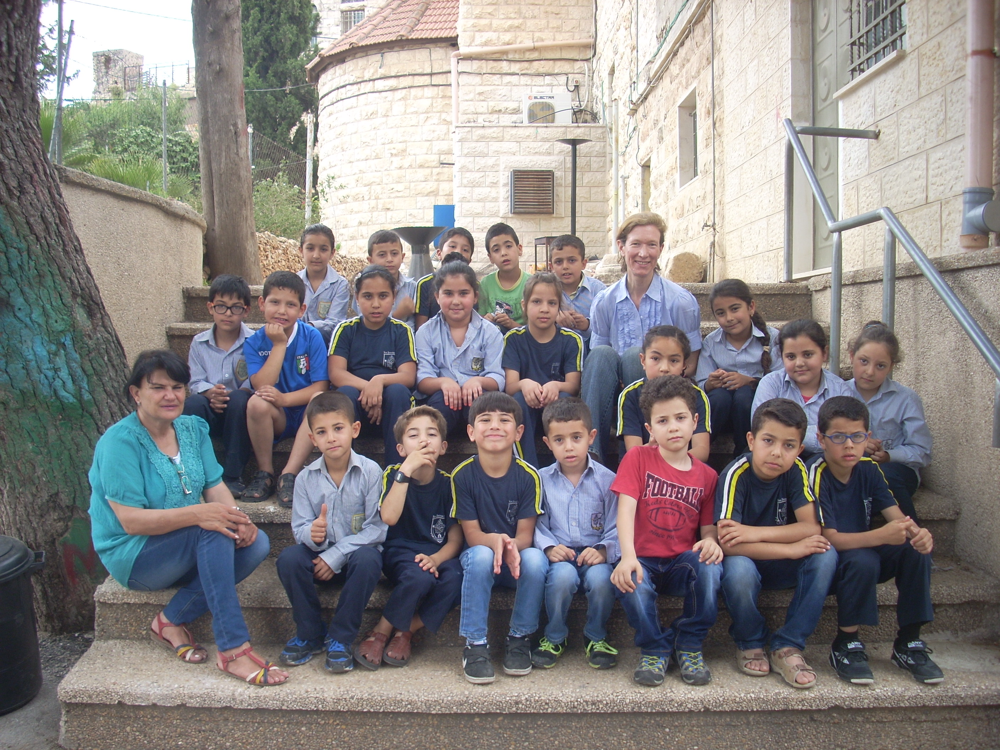

<!DOCTYPE html>
<html lang="fr"></html>
<head>
    <meta charset="UTF-8">
    <meta name="viewport" content="width=device-width, initial-scale=1.0">
    <link rel="icon" href="../images/logos/2.png" type="image/png">
    <link rel="stylesheet" href="../css/css_par_section/typography.css">
    <link rel="stylesheet" href="../css/css_par_section/menu_burger.css">
    <!-- <link rel="stylesheet" href="../css/style_apropos.css"> -->
    <link rel="stylesheet" href="../css/css_categories/style_categorie_bois_dolivier.css">
    <link rel="stylesheet" href="../css/css_par_section/footer.css">
    <link rel="stylesheet" href="../css/css_par_section/css_btn_up.css">
    
    
    <title>À propos</title>
    <style>
    body {
            background-color: #f9f9f9;
            
    }
    body a {
        color: #000000;
        text-decoration: none;
        font-weight: 900;
    }
    body a:hover {
        color: #ff4400;
    }
    body a:hover::after{
        text-decoration: underline;
        width: 100%;
    }
  main {
    padding: 2rem;
    max-width: 1000px;
    margin: auto;
    font-family: 'Arial', sans-serif;
    line-height: 1.6;
    background-color: #f9f9f9; 
  }

  h1, h2, h3, h4, h5, h6 {
    color: #ff4400;
    font-family: 'Georgia', serif;
  }

  h1 {
    font-size: 2.5rem;
    margin-bottom: 1rem;
  }

  h2 {
    font-size: 1.8rem;
    margin-top: 2rem;
    margin-bottom: 0.5rem;
  }

  p {
    font-size: 1.1rem;
    text-align: justify;
    margin-bottom: 1rem;
  }

  .section {
    margin-bottom: 2.5rem;
  }

  @media screen and (max-width: 768px) {
    main {
      padding: 1rem;
    }

    h1 {
      font-size: 2rem;
    }

    h2 {
      font-size: 1.4rem;
    }

    p {
      font-size: 1rem;
    }
  }
  .image-left {
  display: flex;
  align-items: stretch; /* Change pour étirer les éléments */
  gap: 20px;
  margin-bottom: 2.5rem;
}

.image-left img {
  width: 45%;  /* Augmente la largeur de l'image */
  height: 100%; /* Prend toute la hauteur disponible */
  object-fit: cover;
  margin-top: 2%; /* Ajoute un peu d'espace en haut */
  border-radius: 10px;
  box-shadow: 0 4px 12px rgba(0, 0, 0, 0.1);
}

.image-left .text {
  flex: 1;
  display: flex;
  flex-direction: column;
  justify-content: center; /* Centre le texte verticalement */
}

@media screen and (max-width: 768px) {
  html, body {
    width: 100%;
    overflow-x: hidden;
  }
  .image-left {
    flex-direction: column;
    align-items: center;
  }

  .image-left img {
    width: 100%;
    height: auto;
    max-width: none;
  }

  .image-left .text {
    text-align: justify;
  }
}

</style>
</head>
<body>
    <header>
        <h1 id="apropos">À propos de nous</h1> 
        <div id="logo2">
            
        </div>
         <nav>
                <div class="links" style="--items: 4">
                    <a href="../index.html">Accueil</a>
                    <a href="catalogue.html">Le catalogue</a>
                    <a href="les_artisans.html">Les artisans</a>
                    <a href="contact.html">Contact</a>
                    <div class="line"></div>
                </div>
            </nav>
    </header>
    <main>
        <div class="btn-up" style="display: none;">
        <svg class="svgIcon" viewBox="0 0 384 512">
            <path
            d="M214.6 41.4c-12.5-12.5-32.8-12.5-45.3 0l-160 160c-12.5 12.5-12.5 32.8 0 45.3s32.8 12.5 45.3 0L160 141.2V448c0 17.7 14.3 32 32 32s32-14.3 32-32V141.2L329.4 246.6c12.5 12.5 32.8 12.5 45.3 0s12.5-32.8 0-45.3l-160-160z"
            ></path>
        </svg>
        </div>
        <section class="texte"> <!-- Première section -->
            <h2>Notre mission</h2><br>
            <div> 
                <h3>Mettre en lumière l’art et la culture palestiniens</h3> 
                <p>L’un des objectifs principaux de cette vente est de faire connaître la richesse de l’artisanat et de la culture palestinienne. À travers des objets faits main, elle offre un regard différent sur la Palestine, un regard tourné vers la créativité, l’histoire et la vie quotidienne, loin des clichés médiatiques.</p><br>
                <h3>Un geste solidaire accessible à tous</h3><br>
                <p>Acheter un objet artisanal, c’est bien plus qu’un simple achat, c’est une manière concrète d’exprimer son soutien. Même sans engagement militant, chacun peut ainsi participer à une action de solidarité. Ces ventes sont aussi l’occasion de rencontres et d’échanges riches, où l’art devient un langage commun, porteur de sens.</p><br>
                <h3>Une dynamique en pleine expansion</h3><br>
                <p>Aujourd’hui, 24 groupes locaux organisent des ventes d’artisanat dans toute la France, générant un marché d’environ 20 000 euros. Cette année, un nouveau groupe a vu le jour à Épinal, témoignant de la dynamique croissante de ce mouvement. Jusqu’à présent, aucune initiative de ce type n’existait dans la région des Pays de la Loire, l’arrivée d’un groupe dans cette zone représente donc une avancée significative, élargissant encore le rayonnement de ce projet porteur de sens et d’espoir.</p><br>
            </div>
        </section>

        <section class="texte"> <!-- Deuxième section -->
            <h2>Nos membres et leurs histoire</h2><br>
            <p>Ce projet est né de deux expériences marquantes, un voyage solidaire organisé par le CCFD-Terre Solidaire en septembre 2023, et une mission de Volontariat de Solidarité Internationale menée entre 2014 et 2016 dans le cadre de la DCC, partenaire du CCFD-Terre Solidaire.</p>
            <h3>Claudie, Alain, Nadette et Guy </h3><br>
             <div class="section image-left">
                
                <div class="text">
                    <p>La Palestine s’est rapprochée de nous lorsque par l’intermédiaire d’amis , nous avons eu connaissance d’un voyage solidaire en septembre 2023 , sous la houlette de Françoise GUYOT(fondatrice de <a href="https://sgap38.org/"> la sgap38</a>), riche de sa longue expérience et de tous les liens tissés au cours des années .  
                    Nous sommes rentrés le 30 septembre , une semaine avant l’attaque du Hamas et depuis, nous suivons avec attention et tristesse les évènements qui se déroulent là bas. 
                    
                    Nous avons en mémoire les visages de ceux qui nous ont accueillis chez eux , des artisans que nous avons vu travailler , des bédouins qui ont partagé leur repas avec nous. 
                    </p><br>
                </div>    
            </div>
            <p>Nous avons en mémoire leur volonté pour continuer à vivre et à goûter la vie ; à travailler , à cultiver la terre  ou façonner de belles céramiques , malgré les checkpoints et les restrictions de tous ordres . 
                    Ils nous ont offert leur hospitalité , leurs sourires , leur joie de vivre , leur courage … 
                    Et nous , si proches et si loin , impuissants  à les soutenir … 
                    Françoise nous a ouvert un nouveau chemin  vendre ici à Nantes , le produit de leur travail . Nous faisons venir des céramiques , des broderies , des objets en verre soufflé  ou en bois , pour leur permettre de continuer à vivre , et aussi parce que cet artisanat est beau , coloré, porteur d’un savoir faire ancestral et que nous sommes heureux de le faire connaître . 
                </p><br>
            <h3>Béatrice</h3><br>
            <div class="section image-left">
                
                <div class="text">
                    <p>Assistante en langue française dans deux écoles de Cisjordanie entre 2014 et 2016 dans le cadre d'un VSI ( volontariat de solidarité internationale) avec <a href="https://ladcc.org/">la DCC</a>. Par la suite de cette expérience inoubliable, je continue d'aller de temps en temps, animer des camps d'été en français grâce au <a href="https://www.reseaubarnabe.org/">Réseau Barnabé</a>. J'ai eu également la possibilité de recevoir des élèves palestiniens, dans l'établissement scolaire nantais où j'ai travaillé à mon retour de VSI. Ainsi que d'emmener un groupe d'élèves de Seconde de ce même établissement à Jérusalem en 2019 : <a href="https://enseignement-catholique.fr/un-sejour-multiculturel/">Un séjour multiculturel trop court... - Enseignement Catholique.</a> </p><br>
                </div>
            </div>

        </section>
        <section class="texte"> <!-- Troisième section -->
            <h2>Nos collaborateurs</h2><br>
            <h3>La SGAP et ses objectifs</h3><br>
            <p>La <a href="https://sgap38.org/">SGAP</a> (« Solidarité avec les Groupes d’Artisans Palestiniens ») est une association loi 1901 fondée en 2003. Elle a pour objectifs de promouvoir l’artisanat palestinien dans une démarche de commerce équitable et solidaire, de soutenir les coopératives et ateliers fragilisés par la situation économique, et de permettre aux hommes et aux femmes de vivre dignement de leur travail.
            Au-delà de la vente de produits, la SGAP vise à renforcer un partenariat durable entre la Palestine et la France, fondé sur les valeurs de l’économie sociale et solidaire.
            Pour cela, l’association développe le réseau de vente en France et favorise la mise en relation avec de nouveaux partenaires en Palestine, grâce à sa connaissance du terrain. Ce travail contribue à la préservation d’un patrimoine artisanal ancien et participe à faire connaître la culture et l’identité du peuple palestinien.
            </p><br>
            <h3>Le CCFD et ses objectifs</h3><br>
            <p>Le <a href="https://ccfd-terresolidaire.org/">CCFD-Terre Solidaire</a> Acteur historique du changement dans près de 70 pays, le CCFD-Terre Solidaire agit contre toutes les formes d’injustices. Nous œuvrons pour que chacun voie ses droits fondamentaux respectés : manger à sa faim, vivre dignement de son travail, habiter dans un environnement sain, choisir là où construire sa vie… Un monde plus juste et plus fraternel est déjà en action, car chacun porte en lui une force de changement.
            Notre engagement pour plus de justice et de solidarité prend racine dans l’Évangile et la pensée sociale de l’Église. Par notre action individuelle et collective, nous proposons et soutenons des solutions politiques et de terrain.
            <h3>En Israël Palestine, le CCFD-TS oeuvre pour une paix juste entre palestinien.nes et israélien.nes. Nos trois piliers:</h3>
            <h4>Soutenir</h4>
            <span>Des associations partenaires en Palestine et en Israël pour agir sur les causes et les conséquances de l’occupation israélienne.</span>
            <h4>Sensibiliser</h4>
            <span>les citoyens francais*es en leur donnant des clés de compréhension sur la situation.
            </span>
            <h4>Interpeller</h4>
            <span>La France et l'Europe, aux côtés des alliés, doivent exiger le respect du droit international.</span>
        </section>
    </main>
    <footer>
        <div id="footer_container">
            <div id="footer_logo">
                <br>
                
            </div>
            <div id="footer_text">
                <p>En collaboration avec <a href="https://ccfd-terresolidaire.org/"><strong>CCFD-Terre Solidaire</strong></a> et <a href="https://sgap38.org/"><strong>sgap38</strong></a></p>
                <p>Vente de produits artisanaux palestiniens</p>
                <p>Contact : <a href="mailto:ccfdts44.artisanatpalestine@gmail.com">ccfdts44.artisanatpalestine@gmail.com</a></p>
            </div>
            <div id="footer_menu">
                <ul>
                    <li><a href="../index.html">Accueil</a></li>
                    <li><a href="apropos.html">A propos</a></li>
                    <li><a href="catalogue.html">Catalogue</a></li>
                    <li><a href="artisant.html">Les artisans</a></li>
                    <li><a href="contact.html">Contact</a></li>
                </ul>
            </div>
        </div>
    </footer>
</body>
    <script src="../js/javascript_menu_burger.js"></script>
    <script src="../js/btn_up.js"></script>
</html>